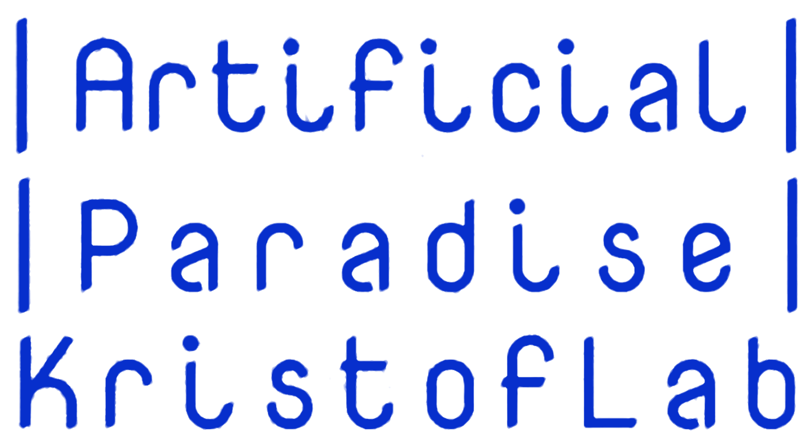

Artificial Paradise · KristofLab · Digital Exhibition

Digital exhibition MAMŰ Gallery, Budapest · 10–31.01.2025
Preparing the basement…
Sound on · headphones recommended
↑↓ or the scroll wheel to walk · ←→ to turn · mouse to look · +/− to zoom · click a work to view · Shift to run · Esc to releaseLeft stick to walk · drag to look · pinch to zoom · tap a work to view